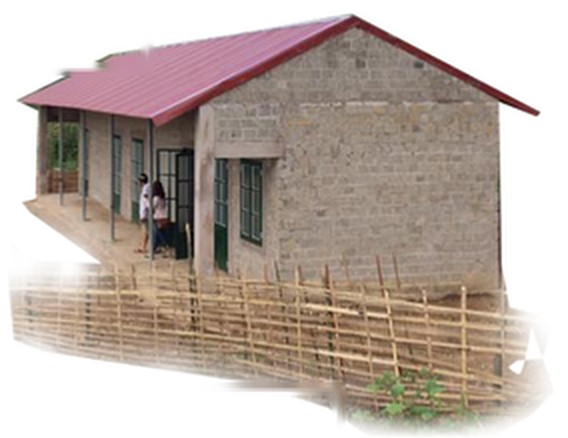

Chân dung 01
Người giữ lửa lớp học ở Na Sang
Hơn 15 năm trở về quê hương dạy học, cô Lò Thị Viên không chỉ tìm cách làm mới những giờ Địa lý mà còn kiên trì vận động học sinh đến lớp, góp tiếng nói để cải thiện điều kiện học tập và sinh hoạt của học trò vùng cao.
Từ người đầu tiên của bản học lên đại học

Với cô Lò Thị Viên, giáo viên Trường THPT Na Sang, tỉnh Điện Biên, con đường đến với nghề giáo bắt đầu từ chính nơi cô sinh ra và lớn lên. Trong một bản làng có đông đồng bào dân tộc Khơ Mú sinh sống, việc con gái tiếp tục học lên cao từng là điều không dễ dàng. Cô là người đầu tiên trong bản học lên đại học, mang theo mong muốn trở về quê hương để góp sức cho giáo dục địa phương.
Năm 2010, sau khi tốt nghiệp, cô Viên trở về công tác tại quê nhà. Dù yêu thích môn Ngữ văn, khi biết địa phương thiếu giáo viên Địa lý, cô quyết định chuyển hướng, theo học ngành Sư phạm Địa lý tại Trường Đại học Sư phạm Thái Nguyên theo diện dự bị đại học.
Lựa chọn ấy mở ra hành trình gắn bó với những lớp học vùng cao suốt hơn 15 năm. Với cô, Địa lý không chỉ là những trang sách về địa hình, khí hậu hay tài nguyên. Đó còn là cách để học sinh hiểu hơn về ngọn núi, con suối, cánh rừng và cuộc sống quanh mình.
Để bài học bắt đầu từ quê hương
Những năm đầu đứng lớp, cô Viên nhận thấy học sinh miền núi thường cho rằng Địa lý là môn học khó và thiếu gần gũi với thực tế. Thay vì chỉ truyền đạt kiến thức theo sách giáo khoa, cô tìm cách đưa những điều quen thuộc trong đời sống địa phương vào bài giảng.
Học sinh được tìm hiểu địa hình, khí hậu, nguồn tài nguyên từ chính nơi mình sống; thu thập số liệu ở bản, vẽ sơ đồ và lập bản đồ nhỏ về nguồn nước, đồi núi xung quanh. Các em cũng được thực hành đọc bản đồ, phân tích số liệu, làm việc nhóm và trình bày kết quả.
Cách dạy ấy giúp kiến thức trong sách có thêm điểm tựa từ trải nghiệm của học sinh. Những điều các em nhìn thấy mỗi ngày trở thành chất liệu để đặt câu hỏi, quan sát và tìm hiểu sâu hơn.
Cô Viên cũng kiên trì bồi dưỡng học sinh giỏi. Theo bài viết trên Tạp chí điện tử Giáo dục Việt Nam, những năm đầu chưa đem lại kết quả như mong muốn, nhưng sau khoảng 4 - 5 năm xây dựng nền nếp và tổ chức ôn luyện bài bản, thành tích dần được ghi nhận. Trong hai năm gần đây tính đến thời điểm bài báo đăng, học sinh lớp 11 và 12 do cô bồi dưỡng đã đạt 4 giải cấp tỉnh.
Không chỉ giữ lớp học, còn giữ học trò ở lại trường

Công việc của cô Viên không dừng lại sau mỗi tiết dạy. Là người sinh ra và lớn lên tại địa phương, cô hiểu những trở ngại có thể khiến học sinh vùng cao gián đoạn việc học. Mỗi mùa tuyển sinh, cô cùng đồng nghiệp đến từng thôn bản, gặp gỡ phụ huynh và vận động các gia đình cho con tiếp tục đến trường.
Theo chia sẻ của cô, có những gia đình lo ngại việc học xa nhà sẽ làm tăng chi phí sinh hoạt. Cô lựa chọn cách trò chuyện, giải thích và kể lại chính hành trình học tập của mình để khuyến khích phụ huynh đặt niềm tin vào việc học của con.
Một vấn đề khiến cô trăn trở là điều kiện ăn ở của học sinh. Trong bài viết năm 2025, cô cho biết khu ký túc xá của Trường THPT Na Sang khi đó chỉ đáp ứng khoảng 150 chỗ ở, trong khi toàn trường có hơn 800 học sinh. Nhiều em phải thuê trọ bên ngoài; một số em sống cách trường 30–40 km và phải tự lo việc ăn ở, đi lại.
Từ thực tế ấy, cô Viên cùng đồng nghiệp nhiều lần kiến nghị chính quyền và vận động các nhà hảo tâm hỗ trợ xây dựng, mở rộng khu ký túc xá. Nhà trường cũng kêu gọi học bổng, nhu yếu phẩm và đồ dùng học tập cho học sinh có hoàn cảnh khó khăn.
Những việc làm ấy cho thấy việc duy trì học tập ở vùng cao không chỉ phụ thuộc vào nội dung bài giảng. Điều kiện sinh hoạt, khoảng cách từ nhà đến trường và khả năng tiếp tục học sau mỗi năm học cũng ảnh hưởng đến cơ hội của học sinh.
Điều còn lại sau mỗi giờ lên lớp
Trong hơn 15 năm gắn bó với giáo dục địa phương, cô Viên đã đảm nhiệm nhiều vai trò chuyên môn, tham gia bồi dưỡng học sinh và hỗ trợ đồng nghiệp. Nhưng điều cô trân trọng, theo chia sẻ với báo chí, là được chứng kiến học trò trưởng thành, tự tin hơn, có em tiếp tục học đại học, có em tìm được công việc ổn định.
Câu chuyện của cô không chỉ là hành trình của một giáo viên trở về quê hương. Đó còn là lời nhắc về những điều làm nên một lớp học bền vững: bài giảng có ý nghĩa với cuộc sống, người thầy kiên trì đồng hành và những điều kiện thiết thực giúp học sinh tiếp tục đến trường.
Giữ lửa lớp học, vì thế, không chỉ là giữ cho một tiết học diễn ra trọn vẹn. Đó còn là nỗ lực để mỗi học sinh nhìn thấy giá trị của việc học, có thêm niềm tin vào khả năng của mình và có cơ hội đi tiếp trên con đường đã chọn.
◆ ◆ ◆
Tin liên quan
Xem thêm » Từ trang sách, em hình dung về thế giới rộng lớn
Từ trang sách, em hình dung về thế giới rộng lớn Quỹ Hy Vọng triển khai chương trình hỗ trợ thư viện cho học sinh vùng cao
Quỹ Hy Vọng triển khai chương trình hỗ trợ thư viện cho học sinh vùng cao Chuyện Trên Non kết nối nhu cầu học tập với nguồn lực cộng đồng
Chuyện Trên Non kết nối nhu cầu học tập với nguồn lực cộng đồng Những trang sách ở Kim Đồng: Khi nhu cầu đọc cần được lắng nghe
Những trang sách ở Kim Đồng: Khi nhu cầu đọc cần được lắng nghe Một ngày ở điểm trường: Những điều làm nên nhịp sống học đường
Một ngày ở điểm trường: Những điều làm nên nhịp sống học đường